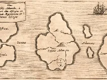
Atlantidewiki-fr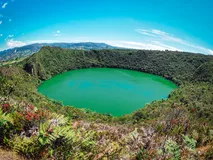
El Doradowiki-en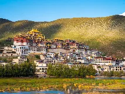
Shangri-Lawiki-sans-filtre Camelotwiki-fr
Camelotwiki-fr
Jardin d'Édenwiki-fr
Lémuriewiki-fr
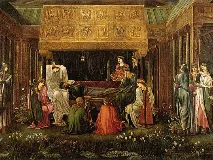
Avalonwiki-fr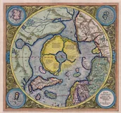
Hyperboréewiki-fr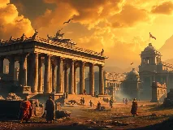
Thuléwiki-fr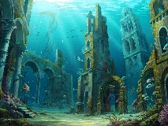
Yswiki-fr
Brocéliandewiki-fr
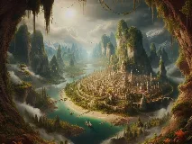
Agarthawiki-en
Shambhalabing
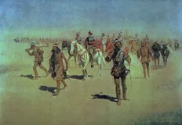
Cités d'or de Cibolabing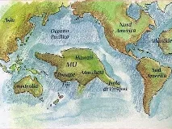
Mubing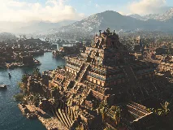
Aztlanwiki-fr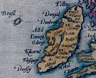
Île de Brasilbing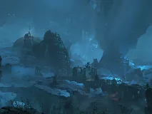
Kitejbing Ophirbing
Ophirbing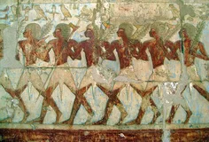
Pays de Pountbing
Fontaine de Jouvencewiki-fr
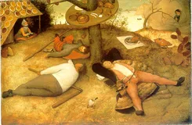
Pays de Cocagnewiki-fr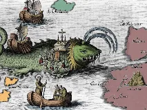
Île de Saint-Brendanwiki-fr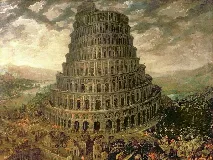
Tour de Babelbing
Jérusalem célestewiki-fr
Sodome et Gomorrhewiki-fr
Îles des Bienheureuxwiki-en